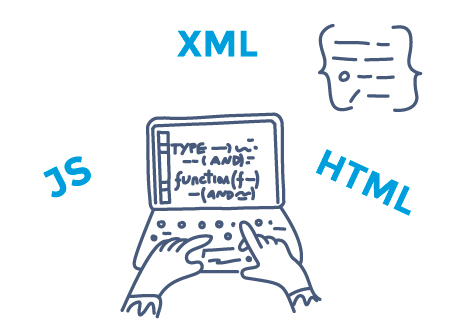
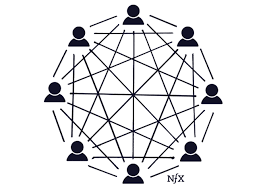

LENGUAJES DE MARCAS
Un lenguaje de marcado o lenguaje de marcas es una forma de codificar un documento que, junto con el texto, incorpora etiquetas o marcas que contienen información adicional acerca de la estructura del texto o su presentación.
El lenguaje de marcas más extendido es el HTML (HyperText Markup Language, lenguaje de marcado de hipertexto), fundamento del World Wide Web (entramado de comunicación de alcance mundial).
Los lenguajes de marcado suelen confundirse con lenguajes de programación. Sin embargo, no son lo mismo, ya que el lenguaje de marcado no tiene funciones aritméticas o variables, como poseen los lenguajes de programación. Históricamente, el marcado se usaba y se usa en la industria editorial y de la comunicación, así como entre autores, editores e impresores.
Un ejemplo de cómo funciona el lenguaje de marcado puede observarse en el dictado de viva voz de un documento a una persona que lo transcribe a máquina:
Ponga estilo de carta, ponga comillas, ponga mayúsculas, Estimado Juan, ponga dos puntos, aparte, sangría, ponga primera letra mayúscula, te escribo esta carta, ponga negrillas, de forma muy urgente, cierre negrilla, ya que no me has enviado..., etc.
BASES DE DATOS
Una base de datos (del inglés: database) se encarga no solo de almacenar datos, sino también de conectarlos entre sí en una unidad lógica. En términos generales, una base de datos es un conjunto de datos estructurados que pertenecen a un mismo contexto y, en cuanto a su función, se utiliza para administrar de forma electrónica grandes cantidades de información.

En este sentido; una biblioteca puede considerarse una base de datos compuesta en su mayoría por documentos y textos impresos en papel e indexados para su consulta. Actualmente, y debido al desarrollo tecnológico de campos como la informática y la electrónica, la mayoría de las bases de datos están en formato digital, siendo este un componente electrónico; por tanto, se ha desarrollado y se ofrece un amplio rango de soluciones al problema del almacenamiento de datos.
En las bases de datos, los datos deben estar estructurados e interrelacionados según un modelo que refleje el máximo contenido semántico. Esto significa que los datos se integran, estructuran, relacionan y comparten, y las interrelaciones deben almacenarse junto con los datos, lo que es una diferencia esencial en comparación con los archivos donde las interrelaciones no se almacenan. La redundancia de datos debe controlarse para evitar duplicidades perjudiciales, aunque se admite la redundancia física por motivos de eficiencia. En resumen, no debe existir redundancia lógica en las bases de datos.
Hay programas denominados sistemas gestores de bases de datos, abreviado SGBD (del inglés Database Management System o DBMS), que permiten almacenar y posteriormente acceder a los datos de forma rápida y estructurada. Las propiedades de estos DBMS, así como su utilización y administración, se estudian dentro del ámbito de la informática.
Las aplicaciones más usuales son para la gestión de empresas e instituciones públicas. También son ampliamente utilizadas en entornos científicos con el objeto de almacenar la información experimental.
REDES LOCALES
Una red de área local o LAN (por las siglas en inglés local area network) es una red de computadoras que permite la comunicación y el intercambio de datos entre diferentes dispositivos a nivel local, ya que está limitada a distancias cortas. Por esta razón, esta red se utiliza para hogares privados, tales como una casa o un apartamento, y en empresas.
La topología de red define la estructura de una red. Una parte de la definición topológica es la topología física, que es la disposición real de los cables o medios. La otra parte es la topología lógica, que define la forma en que los hosts acceden a los medios para enviar datos.
SISTEMAS
Un sistema informático (SI) es un sistema que permite almacenar y procesar información; es el conjunto de partes interrelacionadas: hardware, software y personal informático. El hardware incluye computadoras o cualquier tipo de dispositivo electrónico, que consisten en procesadores, memoria, sistemas de almacenamiento externo, etc.
El software incluye al sistema operativo, firmware y aplicaciones, siendo especialmente importante los sistemas de gestión de bases de datos. Por último, el componente humano incluye al personal técnico que apoya y mantienen el sistema (analistas, programadores, operarios, etc.) y a los usuarios que lo utilizan.